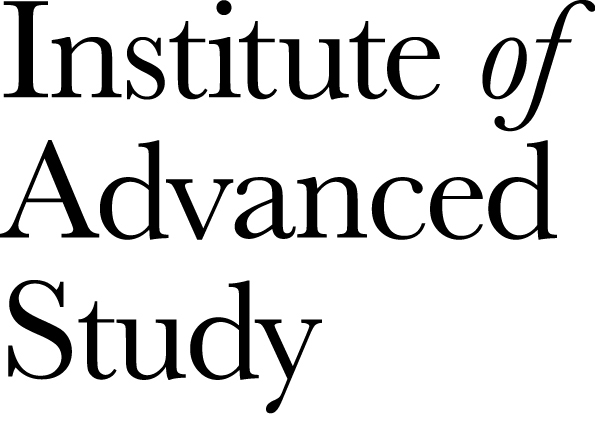
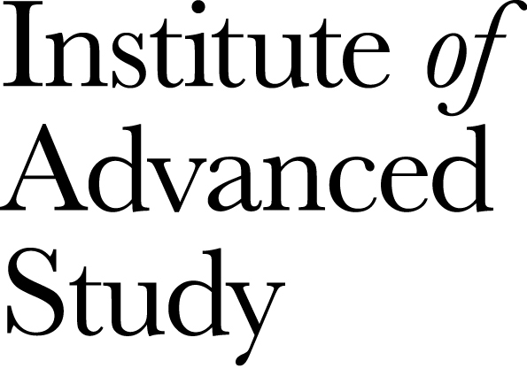

Cadabra is written by Kasper Peeters with help from various contributors listed below.
Special thanks to José M. Martín-García (for the xPerm canonicalisation code), James Allen (for writing much of the original factoring code), Dominic Price (for the conversion to pybind, the Windows port and the logic that enables importing notebooks into other notebooks), Connor Behan (for patches to improve trace operators and various other parts), Fergus Baker (for the new Jupyter kernel), Leo Brewin (for writing beautiful tutorials), Mattia Scomparin (for contributing tutorial notebooks) the Software Sustainability Institute and the Institute of Advanced Study (for financial support). Thanks to the many people who have sent me bug reports (keep 'm coming), and thanks to all of you who use Cadabra, sent feedback or cited the Cadabra papers.
The name Cadabra is an implicit acknowledgement to Mees de Roo, who introduced me to his (so far unpublished) Pascal program Abra in the fall of 2000. This program has an extremely physicist-friendly way of dealing with fermions and tensor symmetries, and a formula history mechanism still not found in any other comparable computer algebra system. Cadabra was originally planned to be ``my private C++ version of Abra'', and even though it does not show much similarity anymore, the development was to a large extent inspired by Abra.
Cadabra has been, is, or will be supported by the following
organisations:
 
